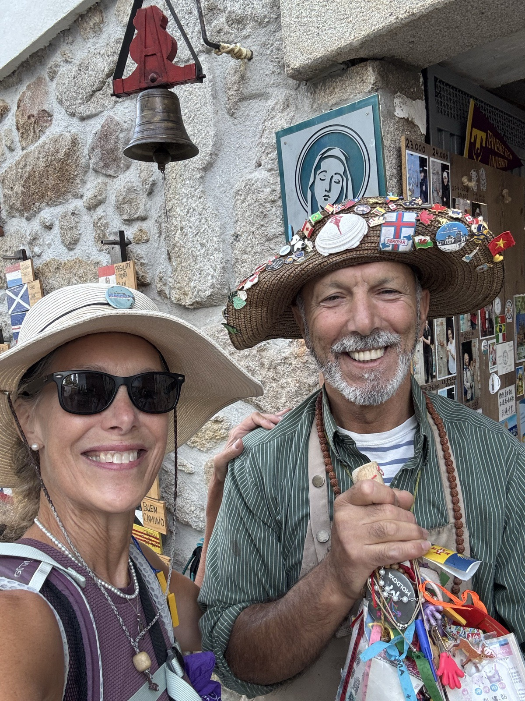
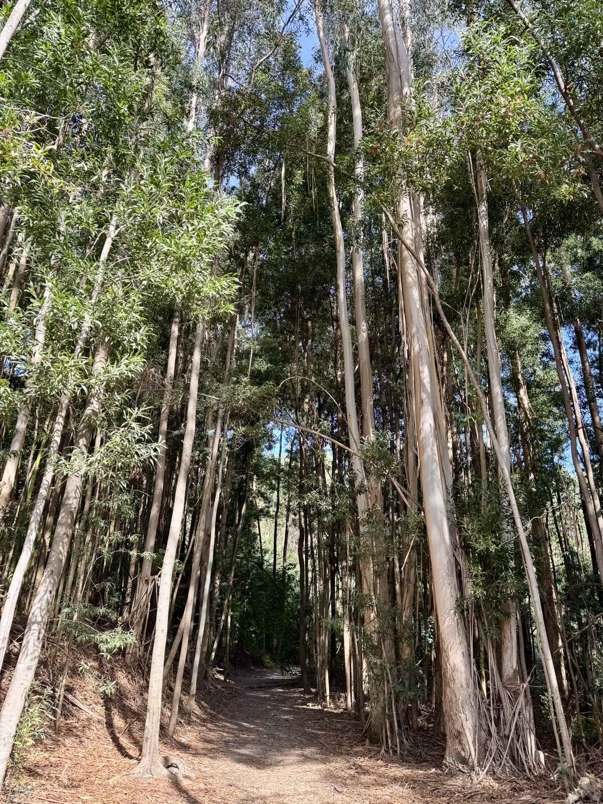
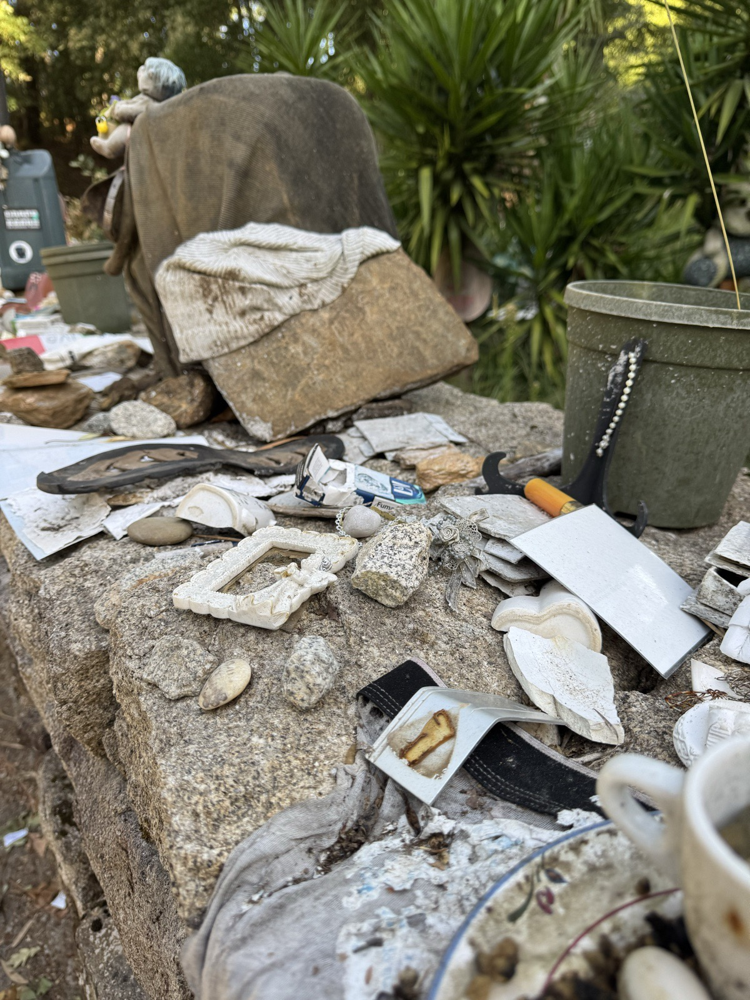
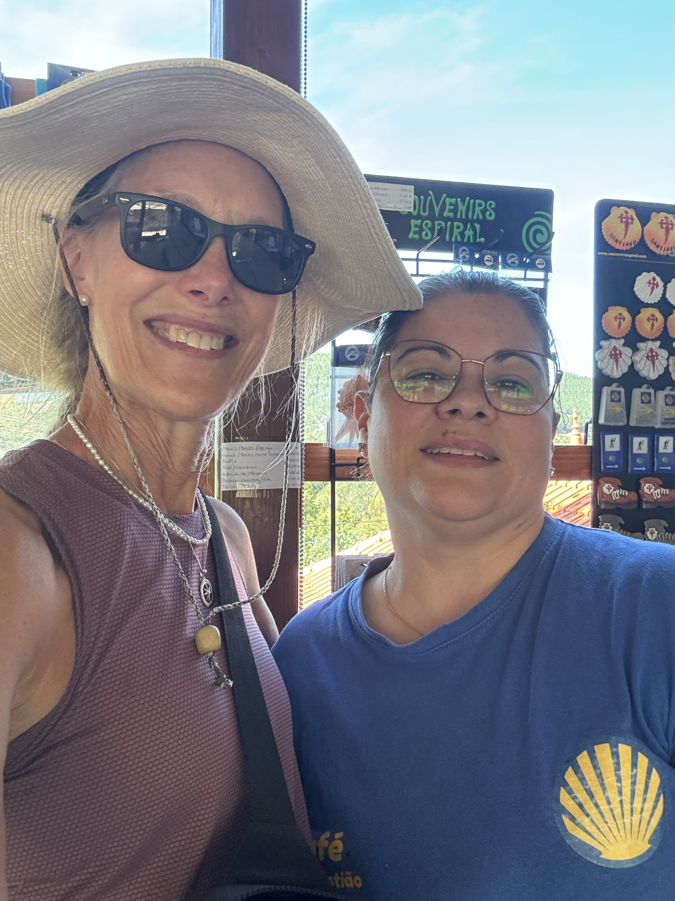
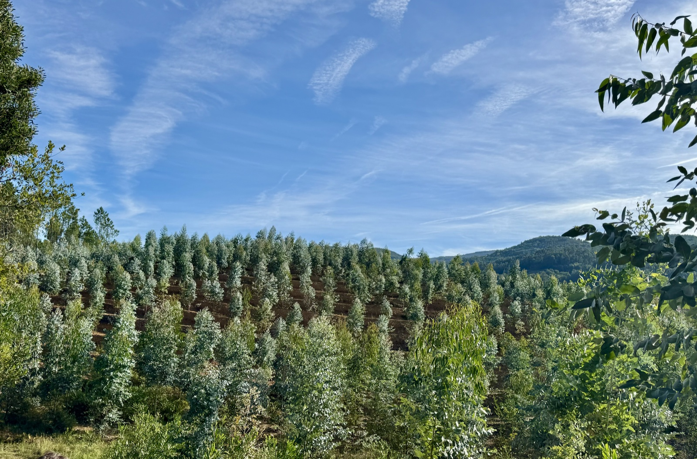

Stage 5: Ponte de Lima to Cassourada
Data: 12.2 miles, 2083 feet elevation gain, 4.38 hours moving time.
Our day started at the Ponte de Alina albergue office who stamped our credentials, rang the bell 6 times—one for each pilgrim in our group, and sent us off enthusiastically with whistled American tunes. We set off for the mountains at a good pace singing selected tunes from The Sound of Music gearing up for Climb Every Mountain for Mt. Labruja. We crossed medieval bridges, walked by stone walls, and peeked at homes.

Today we climbed Mt. Labruja, hiked over beautiful Medieval bridges, and followed eucalyptus forest paths edged with wild heather. Fun and challenging day!! Then I met Elizabeth—from Provincetown at the cafe near the end of our hike. We chatted with a group of younger pilgrims from the Netherlands, China, Australia, England, and—a young woman from Brattleboro, Vermont! Earlier in the day she found Claire’s postcard she left on a sanctuary stone and had sent it to her parents—so excited to see our corner of the world represented on the Camino.



A 12 mile hike was a challenge, but we all completed the hike with energy to spare for dinner and vino verde.
My body seems to be thriving on this intense activity. Feet are fine as I’m switching shoes each day—trail runners with vibrant soles today, while yesterday Hoka ultra cushioned running shoes for pavement, cobblestones, and soft forest trails. My only complaint is not new—a slight vertebrae in my upper back likes to announce its discomfort every now and then. Otherwise, I’m feeling great!! The bliss and peace of the trail is a welcome change from newspapers, the usual everyday routines, and general media hype. The scent of eucalyptus trees and mint plants lining the roads is soothing and refreshing. Forest bathing in the sounds of waterfalls, chirping birds, and the fall leaves gently landing on the path ahead is indeed symphonic.
